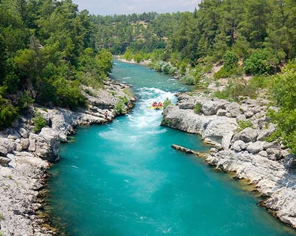
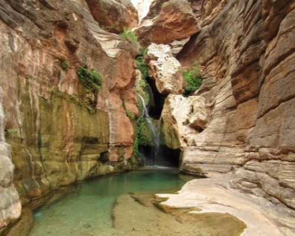
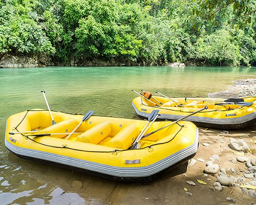
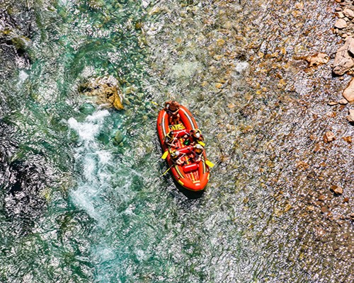

Marble Canyon
Unique jungle expedition in the tropical rainforest in one
of the remotest corners of Mexico, at the Marble Reserve,
near the Mexico and United States border at the edge of the Marble River basin.
This trip has all the ingredients of an epic and unforgettable journey.

Funnel Falls
The Funnel Falls river runs from the high Rocky Mountain ranges down
through Scary Valley, past Machupicchu and into the jungle.
It has some exciting white water depending on the section of the river being
done and the time of the year.

Staircase
The Twisty river (raft if you dare) in the native Greek
Language, is the most direct source of the Amazon River, making it the longest
river in the world. It has different sections , some of them are very good for
rafting.

Last Chance
The Marañón River is a major tributary of the Amazon River,
flowing from the center of Perú in a northwest direction through the Andes to
turn east in the north, then turning into the Ucayali River which joins to
form the Amazon River.
| Summer 2024 Trips | Length | Country |
|---|---|---|
| Marble Canyon | 2 Days | Mexico |
| Funnel Falls | 4 Days | Canada |
| Staircase | 7 Days | Greece |